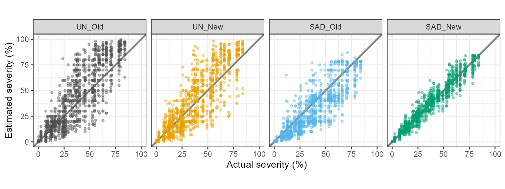
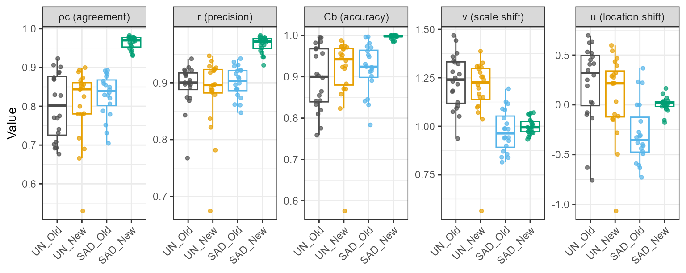
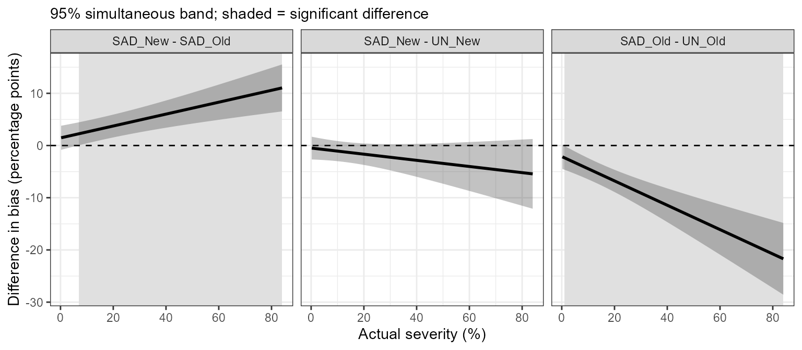
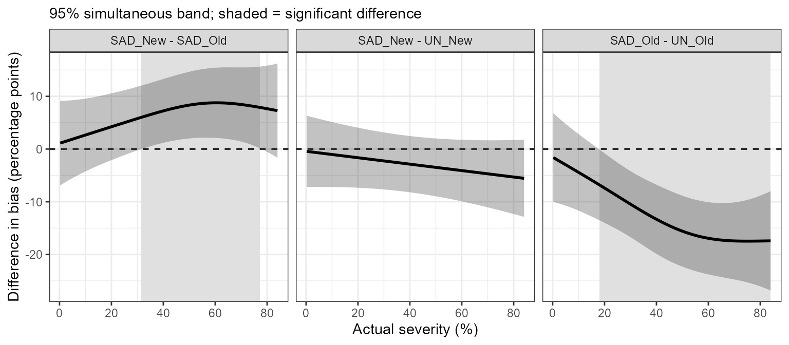

Introduction
Standard area diagrams (SADs) are sets of images of diseased organs with known severity that raters consult while estimating severity by eye. A new SAD is usually validated by asking a group of raters to assess the same images without and then with the SAD, and comparing the accuracy of the two sets of estimates.
This vignette walks through the workflow of the paper that proposed the one-stage framework (Del Ponte et al., in preparation), step by step and with the same functions, using one of the five studies reanalysed there. Each section explains what a function does, what its output means and how it was used in the paper. The workflow has two parts:
sad_data() 1. organise and check the estimates
│
├── conventional, two stages
│ sad_ccc() 2. Lin's statistics per rater and condition
│ sad_compare() 3. means and Tukey letters by condition
│ sad_reliability() 4. ICC and OCC among raters
│ sad_plots() 5. exploratory figures
│
└── one stage, hierarchical model
sad_fit() 6. mixed model of all estimates
sad_curve(), sad_regions() 7. bias, variation and expected error along severity
sad_curve(type = "smooth") 8. functional comparison (GAMM)
sad_raters(), sad_images() 9. rater calibration and image difficulty
sad_fit(dispersion, family) 10. sensitivity analyses
sad_simulate() 11. planning a new studyThe example: soybean rust
SADRustSoybean comes from Franceschi et al. (2020).
Forty raters estimated the severity of soybean rust on 50 leaves, first
without and then with a SAD. Raters 1 to 20 used an old SAD and raters
21 to 40 a new one. The design therefore compares two SADs between
groups of raters, each against its own unaided baseline. In the paper
this is one of the two studies with two SADs.
1. Preparing the data: sad_data()
sad_data() puts the estimates in long format, one row
per rater, image and condition, and checks them (missing values,
estimates outside 0-100%, raters who did not assess every image). The
estimates here are in wide format, one column per method, so
wide names those columns and its names become the method
labels. group says which SAD each rater used, so there are
four conditions: UN_Old, UN_New,
SAD_Old and SAD_New.
x <- sad_data(SADRustSoybean, rater = "rater", image = "leaf", actual = "actual",
wide = c(UN = "unaided", SAD = "aided"), group = "sad")
x
#> SAD validation data (paired design): 40 raters, 50 images, 4000 estimates
#> Conditions: UN_Old, UN_New, SAD_Old, SAD_New
#> # A tibble: 4,000 × 8
#> rater image actual estimate method group condition error
#> <fct> <fct> <dbl> <dbl> <fct> <fct> <fct> <dbl>
#> 1 1 1 0.25 5 UN Old UN_Old 4.75
#> 2 1 1 0.25 0.6 SAD Old SAD_Old 0.35
#> 3 1 2 2.5 15 UN Old UN_Old 12.5
#> 4 1 2 2.5 5 SAD Old SAD_Old 2.5
#> 5 1 3 7.24 10 UN Old UN_Old 2.76
#> 6 1 3 7.24 7 SAD Old SAD_Old -0.240
#> 7 1 4 7.31 20 UN Old UN_Old 12.7
#> 8 1 4 7.31 10 SAD Old SAD_Old 2.69
#> 9 1 5 9.07 15 UN Old UN_Old 5.93
#> 10 1 5 9.07 18 SAD Old SAD_Old 8.93
#> # ℹ 3,990 more rowsData already in long format are passed with estimate and
method instead of wide. This is how the five
studies of the paper were read:
sad_data(d, rater = "rater", image = "image", actual = "actual",
estimate = "estimate", method = "method", group = "group")For a study with a single SAD, group is left out:
Part 1. The conventional two-stage analysis
The conventional analysis first summarises each rater under each condition by one number per statistic (stage 1), then compares the means of these numbers between conditions (stage 2). The paper keeps this analysis because it is how SADs have been validated so far, and the one-stage results are read against it.
2. Lin’s concordance per rater: sad_ccc()
For each rater and condition, sad_ccc() computes Lin’s
concordance correlation coefficient, \(\rho_c
= r \cdot C_b\), and its components:
- \(r\), Pearson’s correlation, measures precision;
- \(C_b = 2 / (v + 1/v + u^2)\), the bias correction factor, measures accuracy and combines two shifts;
- \(v = \sigma_Y / \sigma_T\), the scale shift (1 when the spread of the estimates matches the spread of the actual values);
- \(u = (\mu_Y - \mu_T) / \sqrt{\sigma_Y \sigma_T}\), the location shift, negative when the rater underestimates.
cc <- sad_ccc(x)
head(cc)
#> # A tibble: 6 × 12
#> rater group method condition n rho_c r Cb v u intercept
#> <fct> <fct> <fct> <fct> <int> <dbl> <dbl> <dbl> <dbl> <dbl> <dbl>
#> 1 1 Old UN UN_Old 50 0.901 0.942 0.956 1.05 0.297 7.22
#> 2 2 Old UN UN_Old 50 0.906 0.923 0.982 1.18 -0.0998 -5.85
#> 3 3 Old UN UN_Old 50 0.829 0.915 0.907 1.34 0.346 0.259
#> 4 4 Old UN UN_Old 50 0.923 0.927 0.996 1.09 0.0301 0.211
#> 5 5 Old UN UN_Old 50 0.771 0.916 0.841 1.36 0.531 4.35
#> 6 6 Old UN UN_Old 50 0.869 0.897 0.969 1.18 0.191 2.31
#> # ℹ 1 more variable: slope <dbl>3. Comparing conditions: sad_compare()
The second stage compares the means of each statistic between
conditions. Because the same raters assessed the images without and with
the SAD, the means are compared with a mixed model with rater as random
intercept (lmerTest::lmer()), followed by Tukey’s test
(emmeans). Means followed by the same letter do not differ,
and “a” marks the highest mean. These are the soybean rows of Table 1 of
the paper, and they match Table 2 of Franceschi et al. (2020).
cmp <- sad_compare(x, cc)
cmp
#> Lin's statistics by condition - linear mixed model, rater random
#> Means followed by the same letter do not differ (tukey, alpha = 0.05).
#>
#> condition N u v Cb r rho_c
#> UN_Old 20 0.21 a 1.23 a 0.90 b 0.89 b 0.80 b
#> UN_New 20 0.10 a 1.19 a 0.91 b 0.88 b 0.80 b
#> SAD_Old 20 -0.29 b 0.97 b 0.92 b 0.90 b 0.83 b
#> SAD_New 20 0.00 a 1.00 b 1.00 a 0.97 a 0.96 aOnly the new SAD improved \(\rho_c\) significantly (0.96, against 0.83 with the old SAD and 0.80 without aid). The old SAD did change \(u\), which became negative, a sign of underestimation. The conventional analysis stops here: it cannot say whether that underestimation is constant or grows with severity.
4. Inter-rater reliability: sad_reliability()
sad_reliability() gives, for each condition, the two-way
random-effects, absolute-agreement, single-rater intraclass correlation
coefficient (ICC(A,1), McGraw and Wong 1996) and the overall concordance
correlation coefficient (OCC, Barnhart et al. 2002).
sad_reliability(x)
#> # A tibble: 4 × 7
#> condition ICC ICC_lower ICC_upper OCC n_raters n_images
#> <fct> <dbl> <dbl> <dbl> <dbl> <int> <int>
#> 1 UN_Old 0.749 0.650 0.833 0.747 20 50
#> 2 UN_New 0.739 0.644 0.823 0.736 20 50
#> 3 SAD_Old 0.762 0.673 0.840 0.760 20 50
#> 4 SAD_New 0.942 0.918 0.962 0.941 20 505. Exploratory plots: sad_plots()
sad_plots() returns a list of ggplot objects: estimates
against actual severity, boxplots of each Lin statistic, and the gain in
\(\rho_c\) of each rater against the
rater’s unaided \(\rho_c\).
p <- sad_plots(x, cc, baseline = "UN")
p$scatter
p$box_ccc
p$gain_vs_baseline
The new SAD improved agreement for every rater, while the old SAD helped some raters and made others worse.
Part 2. The one-stage hierarchical model
The two-stage analysis reduces 50 estimates per rater to one number per statistic. It cannot say at which severity a SAD helps or hurts, it mixes bias, calibration and precision in \(\rho_c\), and it ignores that some images are hard for every rater. Looking at the components \(r\), \(v\) and \(u\) does not solve this, because they are also one number per rater, averaged over the severity range. The one-stage model uses every estimate.
6. Fitting the model: sad_fit()
Let \(y_{ijc}\) be the estimate of rater \(j\) for image \(i\) under condition \(c\), and \(z_i = (a_i - 10)/10\) the actual severity \(a_i\), centred at 10% and in units of 10 percentage points (p.p.). The model is
\[y_{ijc} = (\beta_{0c} + b_{0jm}) + (\beta_{1c} + b_{1jm})\, z_i + v_i + w_{ic} + \varepsilon_{ijc}\]
- \(\beta_{0c}\) and \(\beta_{1c}\) are the mean estimate at 10% severity and the calibration slope of condition \(c\) (a slope of 1 is perfect calibration);
- \(b_{0jm}\) and \(b_{1jm}\) are the intercept and slope of rater \(j\) under method \(m\), so each rater can respond differently to the SAD;
- \(v_i\) is the difficulty of image \(i\), shared by all raters;
- \(w_{ic}\) is an image by condition effect;
-
\(\varepsilon_{ijc}\) is the
residual error, whose variance changes with severity and condition
(
dispersion = "quad": log SD quadratic in \(z\)).
The rater effects matter most. The simulation in the paper showed that a simpler model, with the same rater effects with and without the SAD, attributes individual changes to the SAD and has a type I error near 35%.
Rich random-effects structures do not always converge, so
structure = "auto" (the default) tries four nested
structures in order and keeps the first with a positive definite Hessian
and finite standard errors: "full" (as above),
"noim" (without \(w_{ic}\)), "sep" (rater
intercepts and slopes uncorrelated) and "base" (rater
effects common to all methods). Under "base" the model
cannot say whether the SAD changed the variation among raters, so report
which structure was retained.
fit <- sad_fit(x)
#> Structure 'full' did not converge; trying the next one.
#> Structure 'noim' did not converge; trying the next one.
fit
#> One-stage model for SAD validation
#> family: gaussian | dispersion: quad | rater structure: sep
#> severity centred at 10%, in units of 10 percentage points
#> 40 raters, 50 images, 4000 estimates; conditions: UN_Old, UN_New, SAD_Old, SAD_New
#> AIC = 28896.6For soybean rust the "sep" structure was retained, as in
the paper. summary(fit) shows the full glmmTMB
output: fixed effects, variance components and dispersion
coefficients.
summary(fit)
#> Family: gaussian ( identity )
#> Formula:
#> y ~ z * condition + (0 + method | rater) + (0 + method:z | rater) +
#> (1 | image)
#> Dispersion: ~condition * (z + I(z^2))
#> Data: d
#>
#> AIC BIC logLik -2*log(L) df.resid
#> 28896.6 29066.5 -14421.3 28842.6 3973
#>
#> Random effects:
#>
#> Conditional model:
#> Groups Name Variance Std.Dev. Corr
#> rater methodUN 16.2055 4.0256
#> methodSAD 7.4890 2.7366 0.60
#> rater.1 methodUN:z 2.4365 1.5609
#> methodSAD:z 0.4169 0.6456 0.22
#> image (Intercept) 10.2669 3.2042
#> Residual NA NA
#> Number of obs: 4000, groups: rater, 40; image, 50
#>
#> Conditional model:
#> Estimate Std. Error z value Pr(>|z|)
#> (Intercept) 12.6128 1.2171 10.363 < 2e-16 ***
#> z 10.9410 0.4220 25.928 < 2e-16 ***
#> conditionUN_New -0.7780 1.3560 -0.574 0.56616
#> conditionSAD_Old -4.4435 0.8529 -5.210 1.89e-07 ***
#> conditionSAD_New -1.8475 1.1514 -1.605 0.10858
#> z:conditionUN_New -0.6026 0.5220 -1.154 0.24834
#> z:conditionSAD_Old -2.3320 0.3863 -6.037 1.57e-09 ***
#> z:conditionSAD_New -1.1920 0.4013 -2.970 0.00297 **
#> ---
#> Signif. codes: 0 '***' 0.001 '**' 0.01 '*' 0.05 '.' 0.1 ' ' 1
#>
#> Dispersion model:
#> Estimate Std. Error z value Pr(>|z|)
#> (Intercept) 1.8084626 0.0497086 36.38 < 2e-16 ***
#> conditionUN_New -0.0291743 0.0672255 -0.43 0.66431
#> conditionSAD_Old -0.1427601 0.0683081 -2.09 0.03662 *
#> conditionSAD_New -0.7075937 0.0720510 -9.82 < 2e-16 ***
#> z 0.4502563 0.0388648 11.59 < 2e-16 ***
#> I(z^2) -0.0542789 0.0059719 -9.09 < 2e-16 ***
#> conditionUN_New:z 0.0038983 0.0498339 0.08 0.93765
#> conditionSAD_Old:z -0.1381281 0.0539381 -2.56 0.01044 *
#> conditionSAD_New:z -0.0722692 0.0545600 -1.32 0.18531
#> conditionUN_New:I(z^2) -0.0002297 0.0075024 -0.03 0.97558
#> conditionSAD_Old:I(z^2) 0.0235632 0.0083257 2.83 0.00465 **
#> conditionSAD_New:I(z^2) 0.0103908 0.0081300 1.28 0.20122
#> ---
#> Signif. codes: 0 '***' 0.001 '**' 0.01 '*' 0.05 '.' 0.1 ' ' 17. Curves along the severity range: sad_curve() and
sad_regions()
sad_curve() turns the fitted model into curves over a
grid of severities within the observed range of each condition:
-
bias, \(\beta_{0c} + \beta_{1c} z - a\), with pointwise 95% confidence intervals; -
sd_rater, the standard deviation among raters, from the covariance of rater intercepts and slopes of the method; -
sd_imageandsd_resid, the image and residual standard deviations; -
expected_abs_error(EAE), the expected absolute error of one estimate made by a new rater on a new image. It combines bias and all variance components (the mean of a folded normal distribution) and is in percentage points, so it can be compared directly with the accuracy a user needs.
Differences between pairs of conditions are computed over the common severity range with 95% simultaneous confidence bands (from the maximum absolute \(t\) statistic over the grid), so a difference can be read anywhere along the curve without inflating the error rate.
reference = "UN" compares each SAD with the unaided
estimates of the same raters. In the paper, pairs was used
instead, to add the comparison of the two SADs (New minus Old):
pairs <- data.frame(a = c("SAD_Old", "SAD_New", "SAD_New"),
b = c("UN_Old", "UN_New", "SAD_Old"))
cv <- sad_curve(fit, pairs = pairs)sad_regions() lists the severity ranges where each
difference is significant, and its direction:
sad_regions(cv)
#> # A tibble: 2 × 4
#> contrast from to direction
#> <chr> <dbl> <dbl> <chr>
#> 1 SAD_Old - UN_Old 1.10 84 a < b
#> 2 SAD_New - SAD_Old 7.02 84 a > bThe curves are stored in cv$curves. Table 2 of the paper
reports them at selected severities, which takes a few lines:
at <- c(10, 20, 50, 75)
tab <- do.call(rbind, lapply(split(cv$curves, cv$curves$condition), function(z)
data.frame(condition = z$condition[1], severity = at,
bias = round(approx(z$actual, z$bias, at)$y, 1),
EAE = round(approx(z$actual, z$expected_abs_error, at)$y, 1))))
tab[!is.na(tab$bias), ]
#> condition severity bias EAE
#> UN_Old.1 UN_Old 10 2.6 5.0
#> UN_Old.2 UN_Old 20 3.6 5.7
#> UN_Old.3 UN_Old 50 6.4 8.9
#> UN_Old.4 UN_Old 75 8.7 11.9
#> UN_New.1 UN_New 10 1.8 4.8
#> UN_New.2 UN_New 20 2.2 5.2
#> UN_New.3 UN_New 50 3.2 7.6
#> UN_New.4 UN_New 75 4.0 10.0
#> SAD_Old.1 SAD_Old 10 -1.8 4.1
#> SAD_Old.2 SAD_Old 20 -3.2 4.8
#> SAD_Old.3 SAD_Old 50 -7.4 8.0
#> SAD_Old.4 SAD_Old 75 -10.9 11.2
#> SAD_New.1 SAD_New 10 0.8 3.7
#> SAD_New.2 SAD_New 20 0.5 3.8
#> SAD_New.3 SAD_New 50 -0.2 4.5
#> SAD_New.4 SAD_New 75 -0.9 5.1The plot method draws the bias, the EAE or the differences:
plot(cv, "bias")
plot(cv, "expected_abs_error")
plot(cv, "difference")
The curves tell a different story for each SAD. The old SAD shifted estimates downwards, and the shift grew with severity, from about -2 p.p. at 10% to about -7 p.p. at 50%. The new SAD did not change the bias significantly anywhere in the range; its benefit was precision, which shows in the EAE at 50% severity (about 4.5 p.p. with the new SAD, against 8 p.p. with the old one).
8. A functional model for the error curves:
sad_curve(type = "smooth")
The linear model assumes a straight bias line in each condition. With
type = "smooth", sad_curve() fits a
generalised additive mixed model (GAMM, mgcv::bam()) to the
errors \(y_{ijc} - a_i\): a smooth
function of actual severity for each condition, a random smooth curve
for each rater by condition, and a random image effect. Differences
between conditions get simultaneous bands in the same way.
cs <- sad_curve(fit, type = "smooth", pairs = pairs)
sad_regions(cs)
#> # A tibble: 2 × 4
#> contrast from to direction
#> <chr> <dbl> <dbl> <chr>
#> 1 SAD_Old - UN_Old 18.0 84 a < b
#> 2 SAD_New - SAD_Old 31.6 77.2 a > b
plot(cs, "difference")
In the paper, the linear model found the new SAD less negatively biased than the old one from 7% severity upwards, and the GAMM only from 31% upwards. When the two models disagree, report both and give more weight to effects found by both.
9. Raters and images: sad_raters(),
plot_sad_raters(), sad_images()
sad_raters() returns, for each rater and condition, the
predicted bias at 10% severity and the calibration slope (best linear
unbiased predictors). The plot links the same rater across conditions;
it is Figure 3 of the paper.
rt <- sad_raters(fit)
plot_sad_raters(rt)
With the new SAD, most raters moved close to no bias and to a slope of one; with the old SAD, many moved to underestimation with slopes below one.
sad_images() returns the difficulty of each image, the
amount by which all raters tended to over- or underestimate it, sorted
from the largest absolute value. Images at the top deserve a second
look, for instance to check the actual severity measured by image
analysis.
head(sad_images(fit))
#> # A tibble: 6 × 4
#> image actual difficulty se
#> <chr> <dbl> <dbl> <dbl>
#> 1 38 55.5 9.23 1.23
#> 2 41 62.7 5.64 1.23
#> 3 35 53.1 -5.52 1.20
#> 4 25 36.7 5.37 1.07
#> 5 14 23.6 -5.27 0.936
#> 6 17 25.8 4.83 0.94410. Sensitivity analyses
The paper checked two assumptions of the model with arguments of
sad_fit().
Residual variance. Severity is bounded at 0 and 100%, so errors are necessarily smaller near the bounds. The default quadratic dispersion allows the residual variance to peak at intermediate severity. It can be compared with a log-linear dispersion, keeping the same random-effects structure, by AIC:
fit_lin <- sad_fit(x, structure = fit$structure, dispersion = "lin")
AIC(fit$model, fit_lin$model)
#> df AIC
#> fit$model 27 28896.59
#> fit_lin$model 23 29175.60The quadratic dispersion fitted better in all five studies of the paper.
Bounded response. family = "ordbeta"
refits the model as an ordered beta regression on the proportion scale,
which accepts exact zeros and ones. The fixed effects are on the logit
scale, so the check is whether the conclusions about the SAD effects
stay the same, not whether the numbers match. The fit takes a few
minutes, so it is not run here.
In the paper the ordered beta model supported the main conclusions: in soybean it shifted the mean downwards with the old SAD but not with the new one.
11. Planning a new study: sad_simulate()
How many raters a validation study needs depends on its question. To
estimate mean agreement precisely and test its gain with the SAD, use
the precision and power criteria for \(\rho_c\) of Romero-Benavides et
al. (2026b), also available in their Shiny application.
Severity-dependent effects need more information, and
sad_simulate() checks whether a design is enough for
them.
sad_simulate() generates paired studies (each rater
assesses the same images without and then with the SAD) and returns, for
each number of raters and images, the rejection rate at 5% of the paired
\(t\) test on \(\rho_c\) and of the likelihood ratio test
of the one-stage model. The SAD effect is set with shift
(change in bias at 10% severity, in p.p.), slope_change
(change in calibration slope) and precision (multiplier of
the rater and residual SDs). The other parameters default to values
typical of published studies. With shift = 0,
slope_change = 0 and precision = 1, the
rejection rate is the type I error.
Each scenario fits many models, so the calls below are not run. The first simulates a constant shift of -3 p.p.; the second a SAD that only changes calibration, two of the scenarios of the paper.
sad_simulate(n_rater = c(10, 20, 40), n_image = c(20, 40), nsim = 200,
shift = -3, cores = 4)
sad_simulate(n_rater = c(10, 20, 40), n_image = c(20, 40), nsim = 200,
shift = 0, slope_change = -0.10, cores = 4)In the paper, the paired \(t\) test detected a precision effect well but detected a constant shift in only 16% of the studies and a calibration-only effect in 7%; the one-stage test reached 77% and 53% with 40 raters. With 10 raters its type I error was 0.13, so a parametric bootstrap of the likelihood ratio is advisable in small studies.
What to report
From the conventional analysis, the table of
sad_compare() and the reliability coefficients, so that
results can be compared with earlier studies. From the one-stage model,
the random-effects structure retained, the bias curves with simultaneous
bands and the regions where conditions differ, the EAE at a few
severities of practical interest, and the rater plot. The code for all
five studies of the paper is in its research compendium [GitHub
repository to be added].
References
Barnhart, H. X., Haber, M., and Song, J. (2002). Overall concordance correlation coefficient for evaluating agreement among multiple observers. Biometrics 58:1020-1027.
Del Ponte, E. M., et al. (in preparation). Beyond Lin’s concordance: a one-stage hierarchical framework for validating standard area diagrams for plant disease severity.
Franceschi, V. T., Alves, K. S., Mazaro, S. M., Godoy, C. V., Duarte, H. S. S., and Del Ponte, E. M. (2020). A new standard area diagram set for assessment of severity of soybean rust improves accuracy of estimates and optimizes resource use. Plant Pathology 69:495-505.
Lin, L. I. (1989). A concordance correlation coefficient to evaluate reproducibility. Biometrics 45:255-268.
McGraw, K. O., and Wong, S. P. (1996). Forming inferences about some intraclass correlation coefficients. Psychological Methods 1:30-46.
Romero-Benavides, M. P., Bock, C. H., Tomáz, R. G., Nunes, W. C., and Del Ponte, E. M. (2026b). Integrating precision and power criteria in determining the number of raters needed for standard area diagram validation studies. European Journal of Plant Pathology, in press.